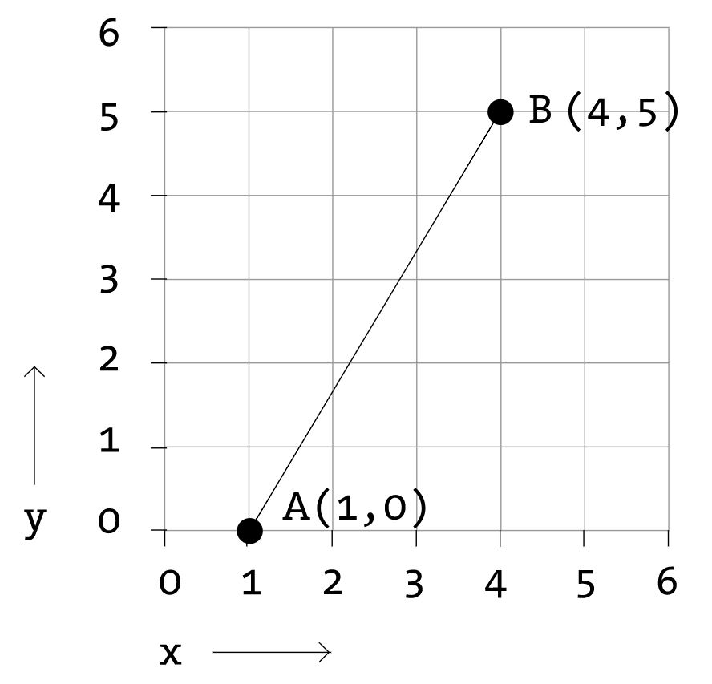
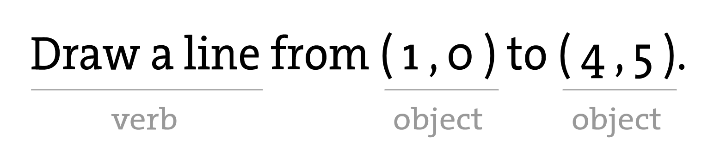

座標系と形状
p5でプログラミングを始める前に、まずは中学校の時の自分自身を思い出し、グラフ用紙を取り出して直線を描きます。2点間の最短距離は、古典的な直線であり、そこから始めましょう。このグラフ用紙上に2つの点を置きます。
上図は、点A（1,0）と点B（4,5）の間の線を示しています。もしもあなたが友達に同じ線を描くよう指示する場合、声をかけて「1-0から4-5までの直線を描いてくれ」と言うでしょう。さて、今回は友達の代わりにコンピュータを想像して、その同じ直線をディスプレイに表示するよう指示する必要があります。同じコマンドが適用されます（ただし、今回は丁寧な挨拶を省略でき、正確な書式を使う必要があります）。以下がその命令になります。
line(1,0,4,5);
コードの文法を勉強していなくても、上記の文はかなり理解できるはずです。マシンが従うための "line" という名前のコマンド（これを "関数" と呼びます）を提供しています。さらに、点A（1,0）から点B（4,5）までどのように線を引くかを指定しています。このコード行を文として考えると、関数が動詞であり、引数が文の目的語になります。また、コード文はピリオドではなくセミコロンで終わります。
ここで重要なのは、コンピュータの画面がより洗練されたグラフ用紙にすぎないことに気づくことです。画面の各ピクセルは、空間内のポイントの位置を決定する "x"（水平）と "y"（垂直）の2つの数字で構成される座標です。そして、私たちの仕事は、これらのピクセル座標でどのような形状や色が表示されるかを指定することです。
それでも、ここには落とし穴があります。8年生のときのグラフ用紙（「直交座標系」と呼ばれます）は、y軸が上を向いていて、x軸が右を向いていました（正の方向は下向きで左です）。しかし、コンピュータのウィンドウ内のピクセルの座標系は、y軸に沿って反転しています。 (0,0) は左上にあり、正の方向は水平方向に右側、垂直方向に下側です。

単純な形状
p5のプログラミング例の大多数は視覚的なものです。これらの例は、本質的には図形の描画とピクセルの設定を行うことに関わります。まずは、4つの原始的な形状を見てみましょう。

各形状について、その形状の位置やサイズ（そして後で色）を指定するために必要な情報は何かを考え、p5がその情報を受け取る方法を学びます。以下の各図では、幅が100ピクセル、高さが100ピクセルのウィンドウを想定しています。
点point()は形状の中で最も簡単なもので、始めるのに良い場所です。点を描画するには、単にx座標とy座標が必要です。
線分line()もそれほど難しくありません。線分を描画するには、(x1,y1)と(x2,y2)の2つの点が必要です。
しかし、rect()を描画すると、少し複雑になります。p5では、長方形は左上隅の座標と幅、高さで指定されます。
長方形を描画する別の方法は、中心点と幅、高さを指定することです。この方法を使用する場合は、最初にCENTERモードを使用することを示します。長方形の命令自体の前に、p5が大文字と小文字を区別することに注意してください。
最後に、2つの点（左上隅と右下隅）で四角形を描くこともできます。この場合のモードはCORNERSです。この例は、上記の例と同じ結果を画面上で与えることに注意してください。
四角形を描く概念に慣れたら、ellipse()は簡単です。実際、それはrect()と同じであり、違いは矩形の外接矩形に楕円が描かれることです。ellipse()のデフォルトモードはCENTERではなく、CORNERです。
ここでは、形状をより完全な形で表現したコードを見てみましょう。キャンバスの寸法は200 x 200であることに注意してください。キャンバスの幅と高さを指定するために、createCanvas()関数を使用していることにも注目してください。